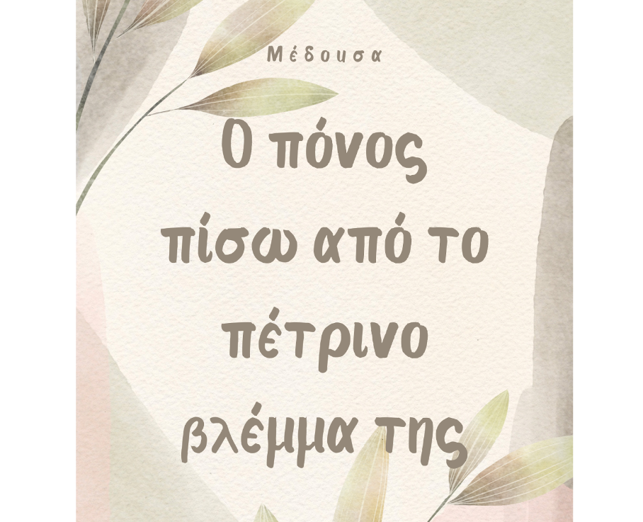
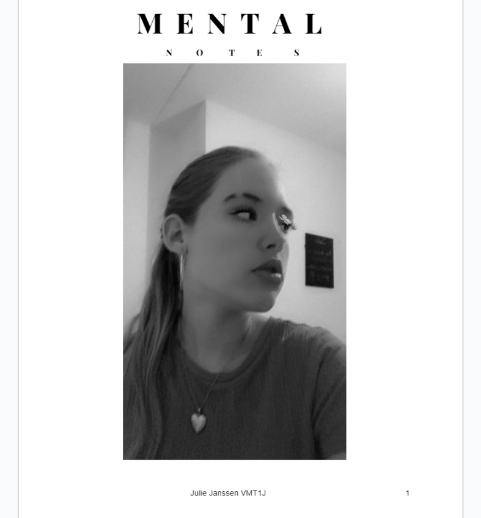
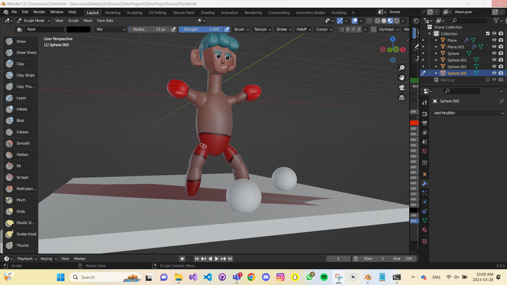
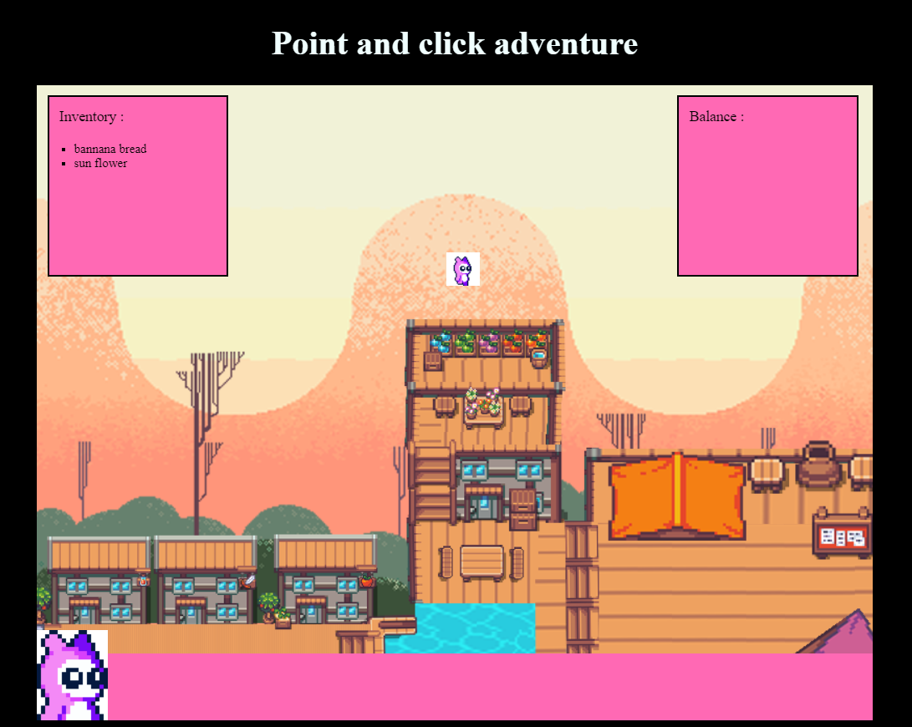

Hallo,
Dit is een webpagina waar u vijf projecten kunt vinden die ik gemaakt
heb in het afgelopen schooljaar.
Deze projecten zijn opgedeeld aan de hand van de emotie die ik er bij
voel.
Ik wens u nog een fijne dag verder en hopelijk vindt u deze website
informatief!
Trots

Hier ziet u het project waar ik me trots bij voel.
Het nederlands project waarbij wij onze eigen moderne versie hebben
gemaakt
van een zelf uitgekozen mythe. De reden waarom ik hier zo trots op ben
is omdat
ik het heerlijk vind om verhalen te schrijven, maar ook
vooral omdat het verhaal
precies is geworden zoals ik me voor stelde.
Plezier

Hier ziet u het project waar ik veel plezier aan heb ervaren.
Het engels project waarbij wij ons eigen magazine hebben mogen
ontwerpen.
De reden waarom ik hierbij zoveel plezier heb ervaren was omdat ik het
erg leuk
vindt om dingen te ontwerpen en te schrijven. Hierdoor ging dit project
mij dan ook
makkelijker af en vooral met veel enthousiasme!
Zelfvertrouwen
Deze afbeelding komt u wellicht bekend voor.
Dit is namelijk een bundel van twee magazines.
De nederlandse en engelese versie. Door de nederlandse
versie heb ik veel meer schrijf zelfvertrouwen opgebouwd,
dit is waarom ik deze ook wilde betrekken in deze lijst.
Eigenheid

Hier ziet u mijn shine project.
Tijdens dit project heb ik in Blender een eigen karakter gemaakt.
Dit was een erg groote uitdaging voor mij,
maar het liet mij ook veel meer vrij om mezelf te uiten.
Vandaar dat ik dit project onder het kopje eigenheid heb geplaatst.
Groei

Hier ziet u een schermafbeelding van mijn point & click avontuur game.
Deze heb ik onder groei geplaatst omdat het mij enorm veel vooruit heeft
geholpen in mijn groei binnen SoftwareDevelopement.
Ook heeft het groei veroorzaakt op gebied van mijn creativiteit en Zelfvertrouwen.